传输层
TCP/IP模型与OSI模型的比较
相同点
- 两者都是以协议栈的概念为基础
- 协议栈中的协议彼此相互独立
- 下层对上层提供服务
不同点
- OSI是先有模型；TCP/IP是先有协议，后有模型
- OSI使用于各种协议栈，TCP/IP只适用于TCP/IP网络
- 层次数量不同
传输层的作用
- IP层提供点到点的连接，传输层提供端到端的连接
- 一个程序会监听（占用）一个端口，如果这个端口80倍nginx占用了，别的程序就不能再占用这个端口了
传输层的协议
TCP（Transmission Control Protocol）
- 传输控制协议
- 可靠的、面向连接的协议
- 传输效率低
UDP(User Datagram Protocol)
- 用户数据报协议
- 不可靠的、无连接的服务
- 传输效率高
TCP
TCP的封装格式
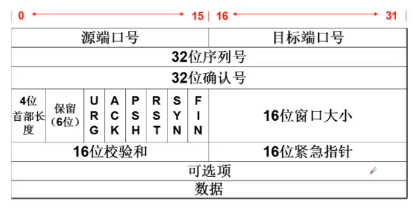
- 字段
- 源端口号
- 发送TCP进程对应的端口号
- 目的端口号
- 目标端接收进程的端口号
- 32位序列号
- 0~~2^32-1范围内，数据段标记，用于到目的端对到达包的重组
- 32位确认号
- 0~~2^32-1范围内，对发送端的确认信息，告诉发送端这个序号之前的数据段都收到了
- 4位首部长度
- 保留（6位）
- URG
- 紧急指针有效位，与16位紧急指针配合使用
- ACK
- 确认序列号有效位，表明该数据包包含确认信息
- PSH
- 通知接收端立即将数据提交给用户进程，不再缓存中停留，等待更多的数据
- RST
- 重置位。为1时，请求重新建立TCP连接
- SYN
- 想和别人建立同步，为1时，请求建立连接
- FIN
- 断开连接，为1时候，数据发送完毕，请求断开连接
- 16位窗口大小
- 滑动窗口的大小，指明本地可接收数据的字节数
- 16位校验和
- 16位紧急指针
- 可选项
- 数据
- 源端口号
连接与断开
三次握手
- hostA :发送SYN，请求建立连接(seq=100,ctl=SYN)
- hostB：发送SYN、ACK（seq=300,ack=101,ctl=SYN、ACK）
- hostA发送ACK（seq=101 ack=301 ctl=ACK）
状态：
[root@localhost ~]# netstat -anplut 查看网络状态
ESTABLISHED—–》三次握手完成之后的状态
SYN_SENT —-》发送第一个数据包
SYN_RECV—–》接收到数据包
LISTEN:服务器端监听，等着别人来访问，一直打开某个端口。例如web服务器会一直打开80端口
四次断开
- hostA 发送FIN，请求断开连接（seq=101,ack=301,ctl=FIN ,ACK）
- hostB 发送ACK（seq=301,ack=102,ctl=ACK）
- hostB发送FIN,请求断开连接（seq=301,ack=102,ctl=FIN,ACK）
- hostA发送ACK（seq=102,ack=302,ctl=ACK）
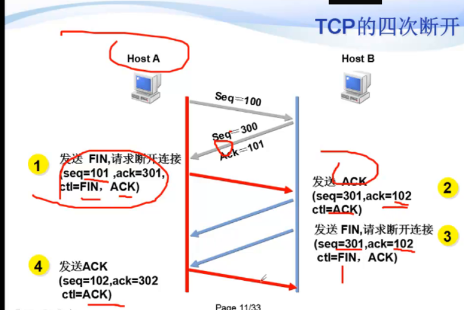
状态：
FIN_WAIT1 —–》
FIN_WAIT2 —–》
TIME_WAIT ——》
CLOSE_WAIT——》
LAST_ACK —-》
CLOSING —-》发送完最后一个包后，等待一段时间的时候的状态
CLOSE ——》两边真正都关闭连接
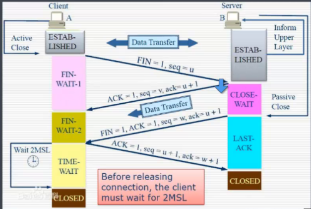
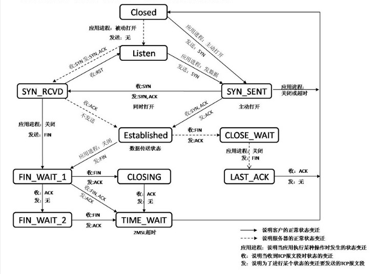
流量控制
TCP的流控机制–滑动窗口
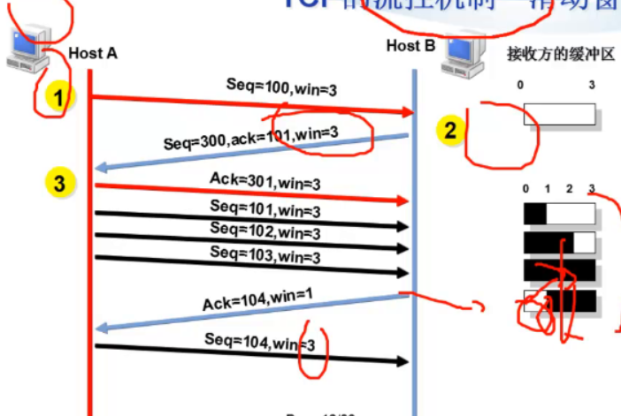
拥塞控制
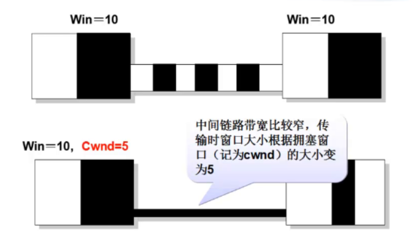
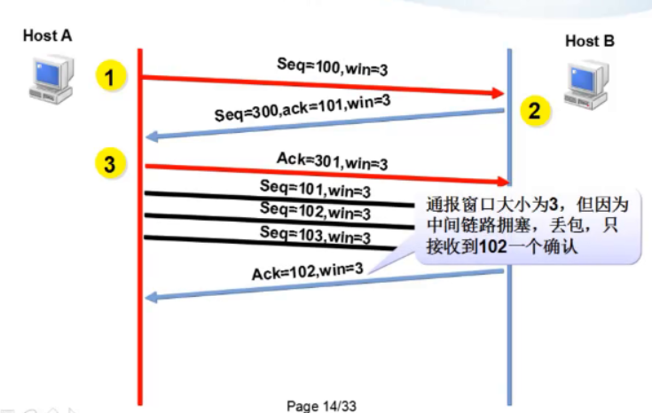
差错控制
TCP差错控制的3种方式
- 校验和
- 确认
- 受损伤的数据段
- 丢失的数据段
- 重复的数据段
- 失序的数据段
- 确认的丢失
- 超时
计时器
重传计时器—–》数据包丢失
- 为了控制丢失的数据段
- 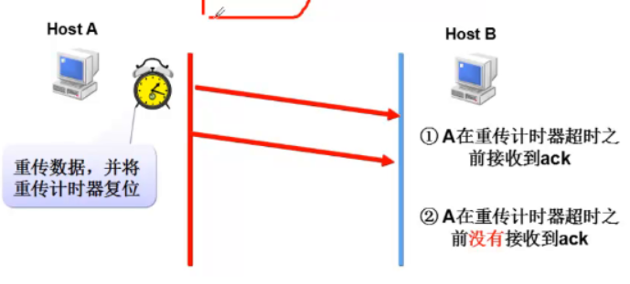
坚持计时器—–》防止窗口0死锁
- 为了防止零窗口死锁
- 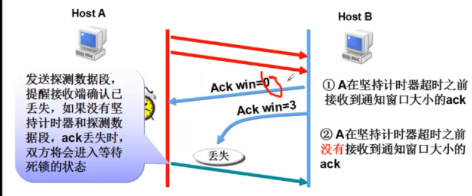
保活计时器—-》长连接试探的
- 防止两个TCP之间的连接的长时间的空闲
- 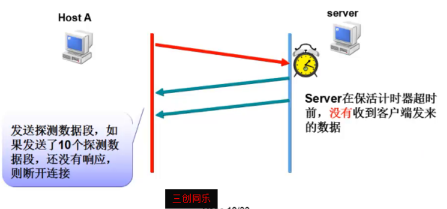
时间等待计时器—-》time-wait
- 连接终止期间使用的
- 在发送了最后一个ACK后，不立即关闭连接，而是等待一段时间，保证能接收到重复的FIN数据段
- 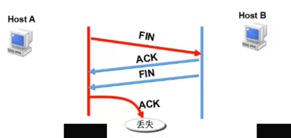
应用

UDP
非常经典的使用：QQ,DNS
封装格式
- 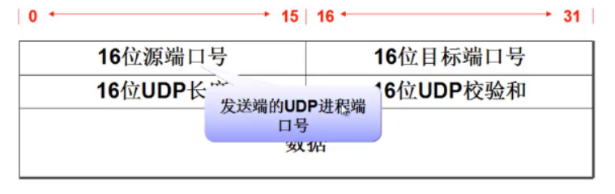
UDP的使用
- 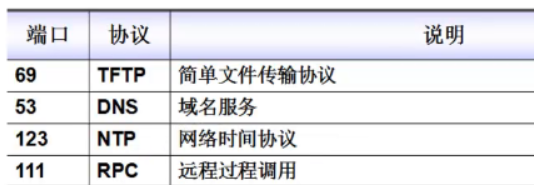
- DNS服务器支持TCP和UDP两种协议的查询方式，而且端口都是53.大多数的查询都是UDP查询的，一般需要TCP查询的有两种情况
- 当查询数据较大以至于产生数据分段，这时，需要利用TCP的分片能力来进行数据传输
- 当主（master）服务器和辅（slave）服务器之间数据同步通信的时候
UDP的流控和差错控制
- UDP没有流控
- UDP只有校验和来提供差错控制
- 需要上层协议来提供差错控制：例如TFTP协议
- 需要上层协议来提供差错控制：例如TFTP协议

TCP/IP协议栈
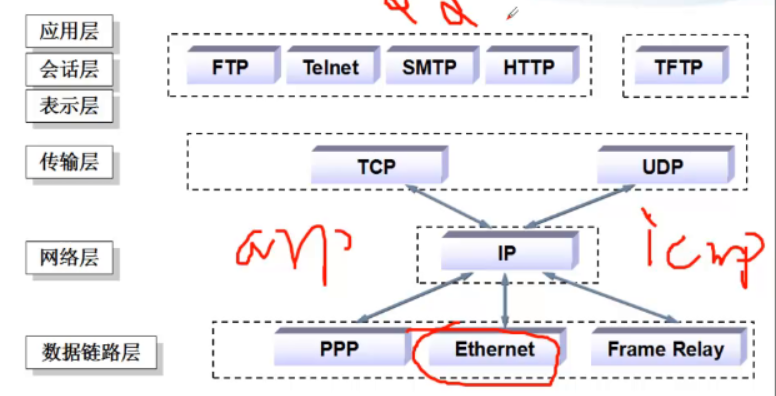
补充
网络socket
- ip :port 0.0.0.0:80
- 能实现不同电脑上2个进程之间的通信
文件socket
- /var/lib/mysql/mys‘ql.sock
- 同一台电脑上的2个进程之间的通信
为什么很多服务器采取短连接？
服务器会主动断开
Linux下一块网卡可以配置多个IP地址，可以是同一个网段也可以是不同网段的
临时添加
- ip add add 192.168.0.125/24 dev ens37
永久添加
- 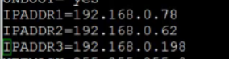